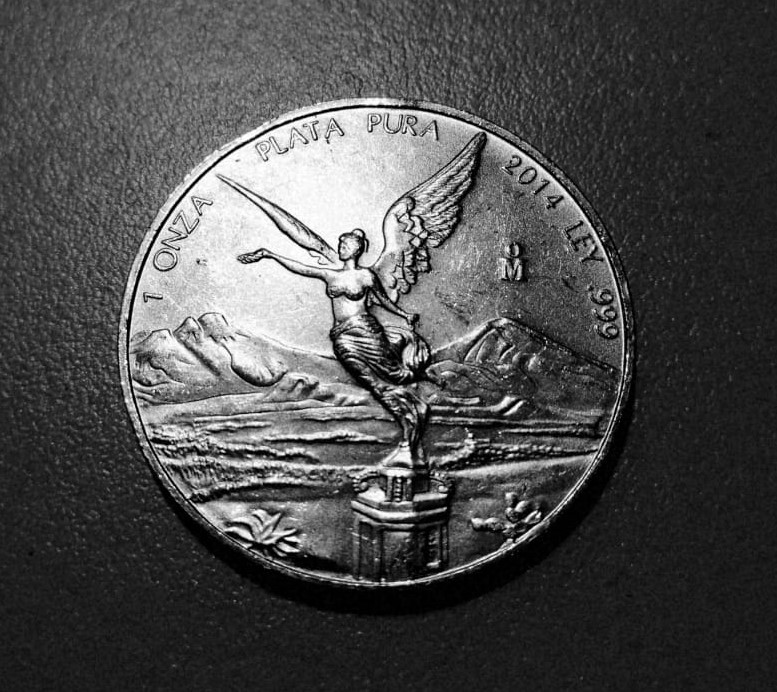
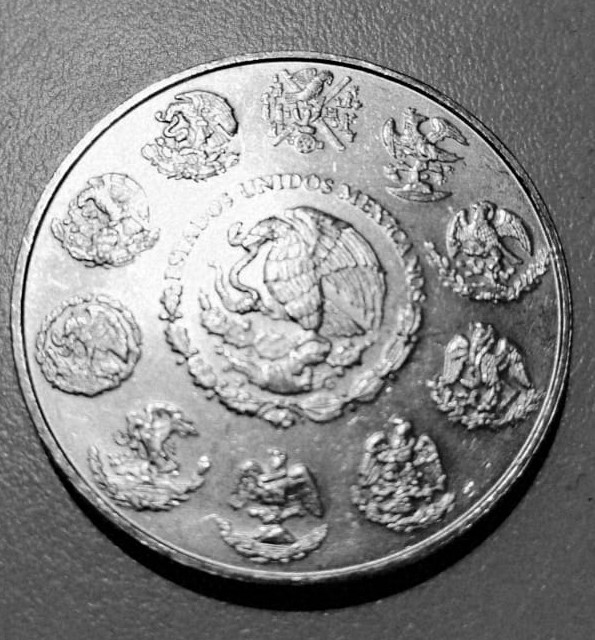
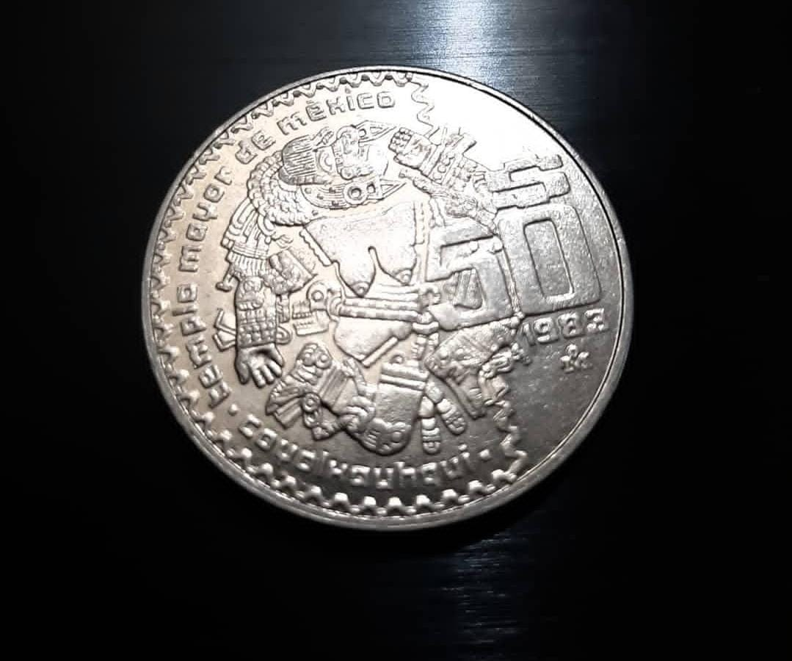
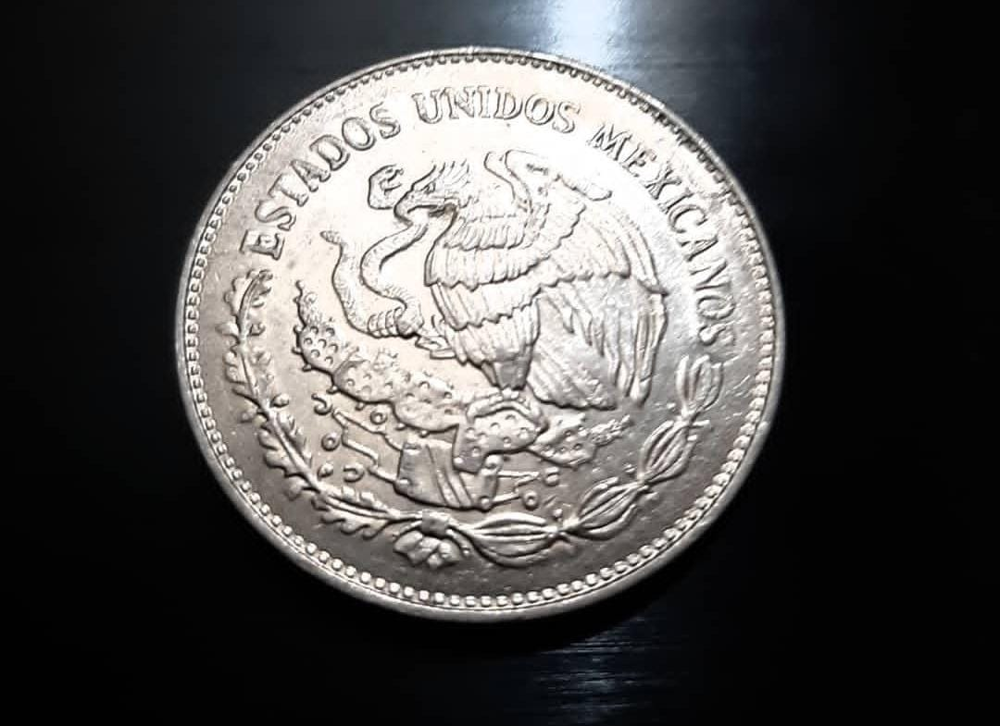
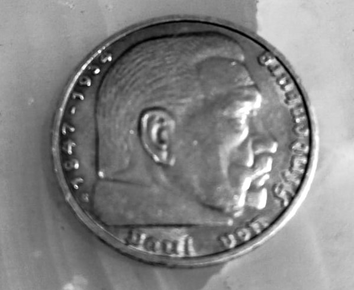
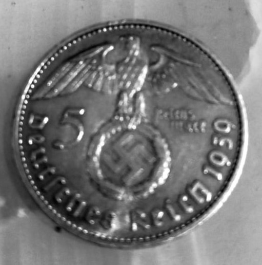
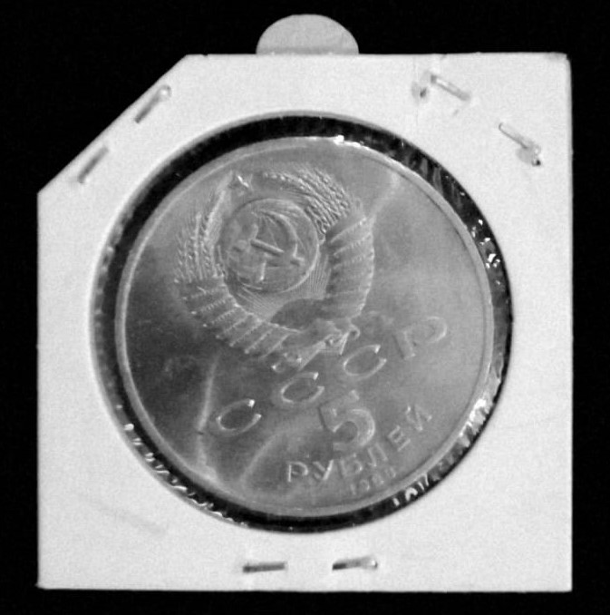
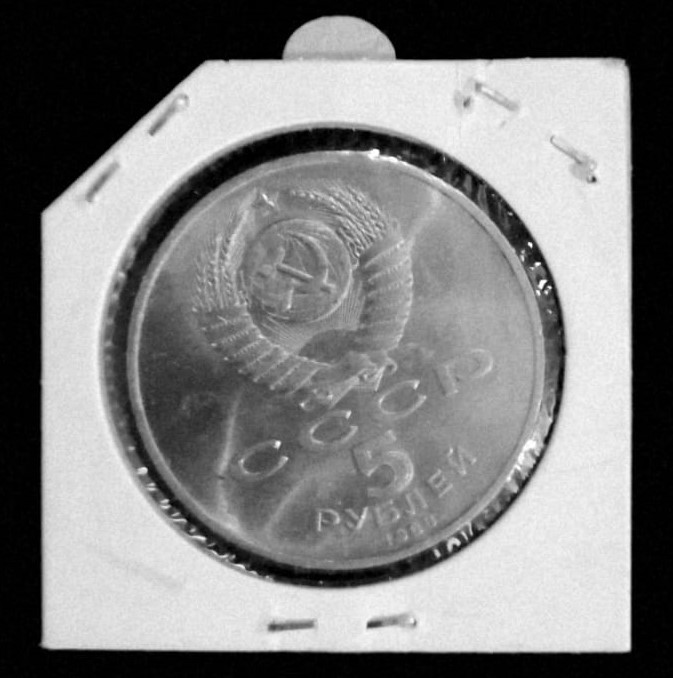
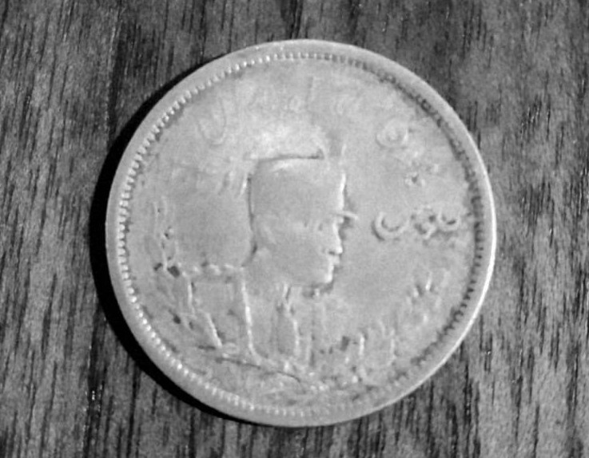
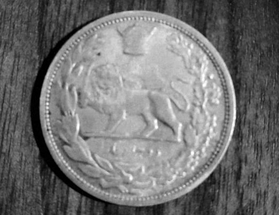

(Reproduce la canción para admirar las monedas mejor 🎧 )
|Mexicanas|
   
|Alemanas|
 
|Soviéticas|
 

|Iraníes|
 
Y recuerda...
"Sé un coleccionista, no un buscador, y compra tus conocimientos en lugar de adquirirlos con tus ojos y tus manos,
porque a veces será demasiado tarde para vivirlos".